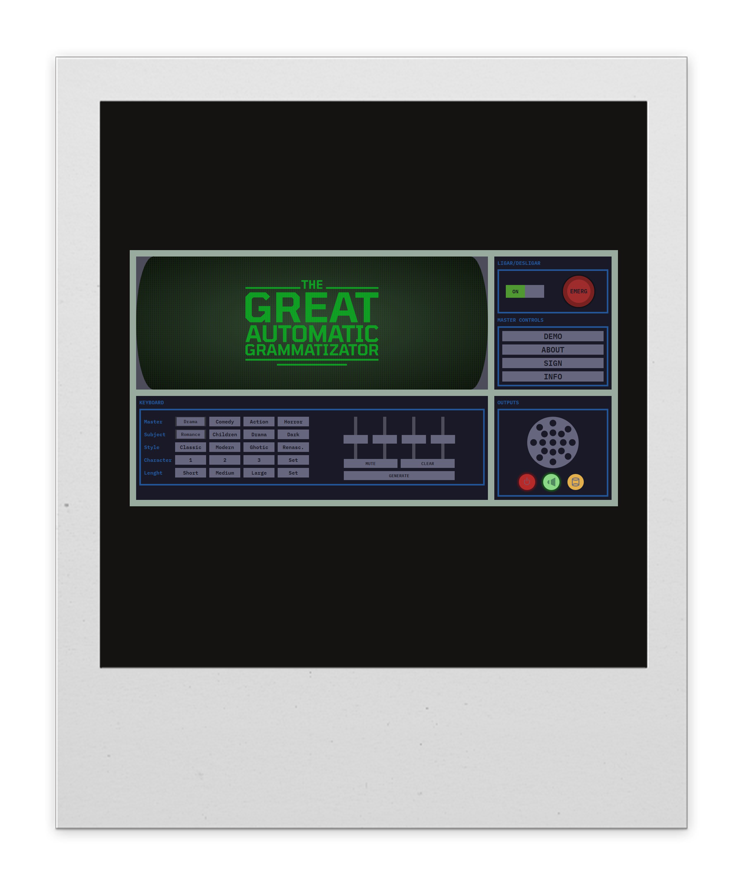
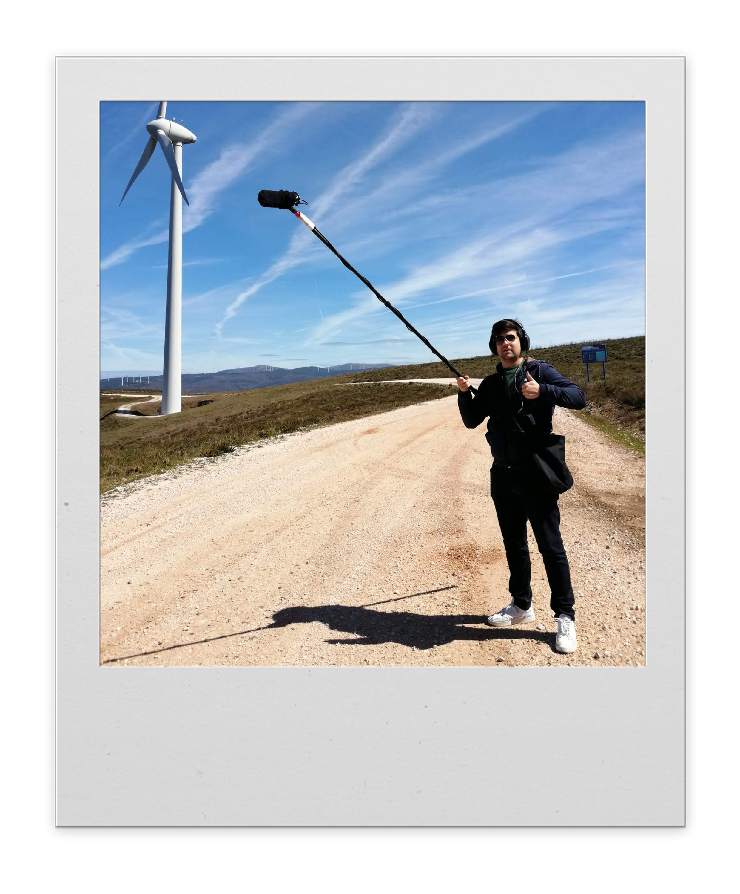
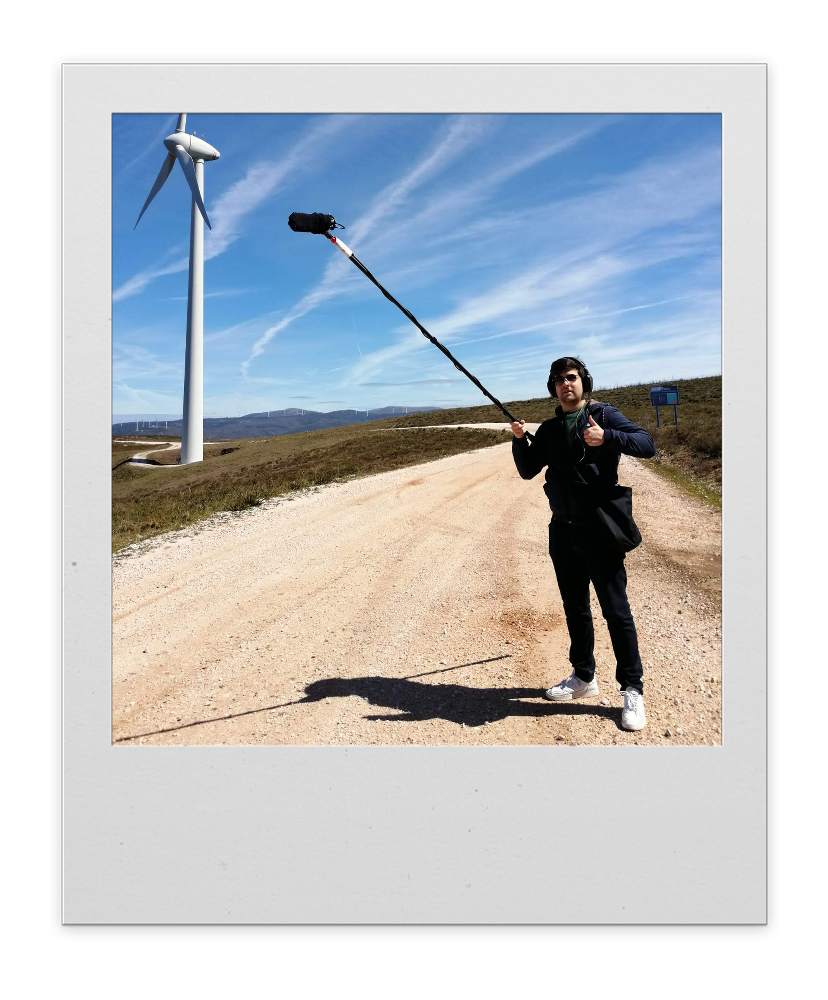

DESIGN
A minha formação é no campo das artes visuais, área que sempre me despertou interesse e em que terminei o secundário, em 2020. Em 2023 licenciei-me em Design e Multimédia pela Faculdade de Ciências e Tecnologias da Universidade de Coimbra, onde me encontro, atualmente, a frequentar o mestrado na mesma área. Dentro deste mundo, creio que os meus pontos fortes recaiem sobre o design gráfico, editorial e de comunicação.


MÚSICA
Aos 15 anos ganhei um gosto especial pela música e comecei a aprender a tocar guitarra. Com o tempo, aprendi a mais instrumentos e dediquei-me ao mundo da produção musical. Desde 2020, tenho um projeto musical em nome próprio sob o qual vim a criar os meus primeiros originais, que escrevi, compus, gravei, produzi e misturei. Em 2022 comecei a dar os meus primeiros concertos ao vivo em nome próprio acompanhado pela minha banda, e em Outubro de 2023 lancei o meu primeiro álbum de originais, "Lamiré".


AUDIOVISUAL
Desde novo tenho um grande interesse pelo mundo do audiovisual, em especial pela fotografia, produção e pós-produção de vídeo. Já mais velho ganhei um gosto especial pelo cinema, e comecei a especializar a minha formação em captação e pós-produção de áudio. Mais recentemente, tenho vindo a colaborar como diretor de som e pós-produtor em curtas-metragens - "O Alto do Mártir" (2021) e "Berço" (2023) de Carolina Costa - que marcaram lugar em diversos festivais de cinema do país. Em 2022 fiz parte da residência cinematográfica "MDOC - Plano Frontal", da qual resultou a curta "La Larai" (2023).
 
